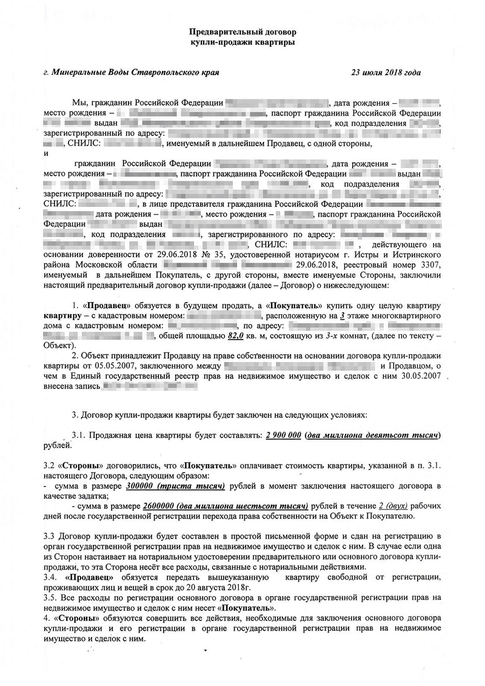
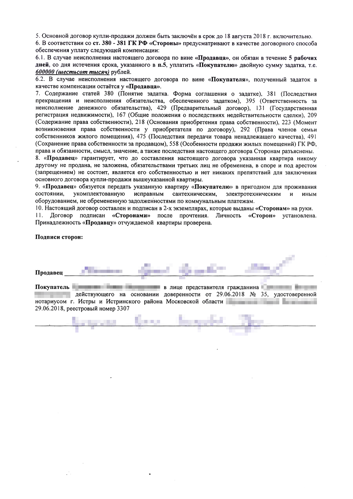
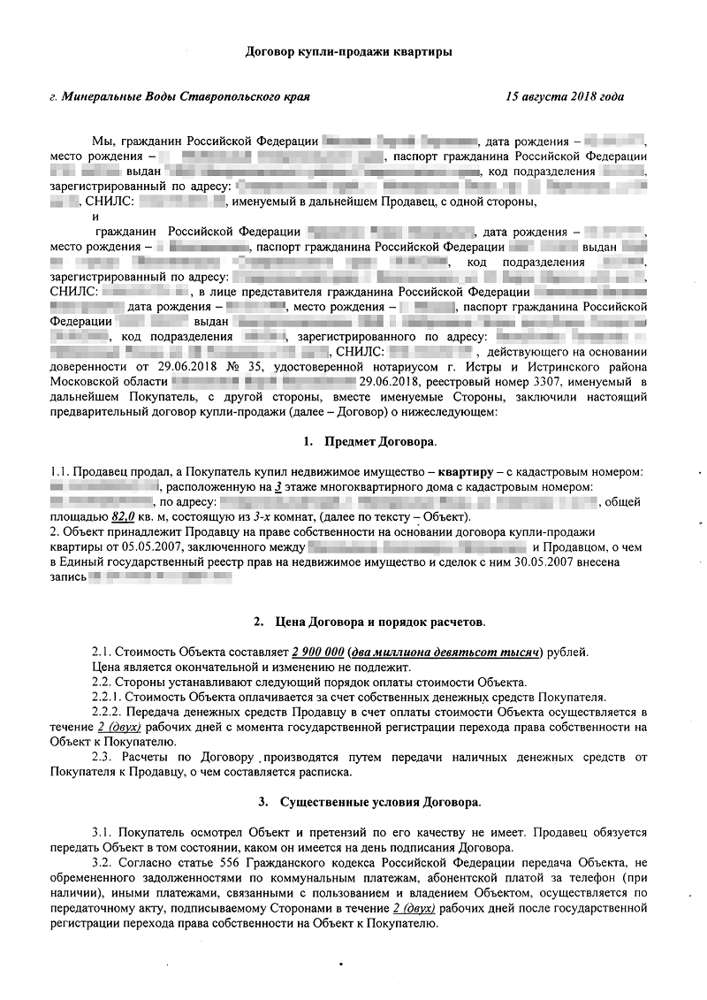
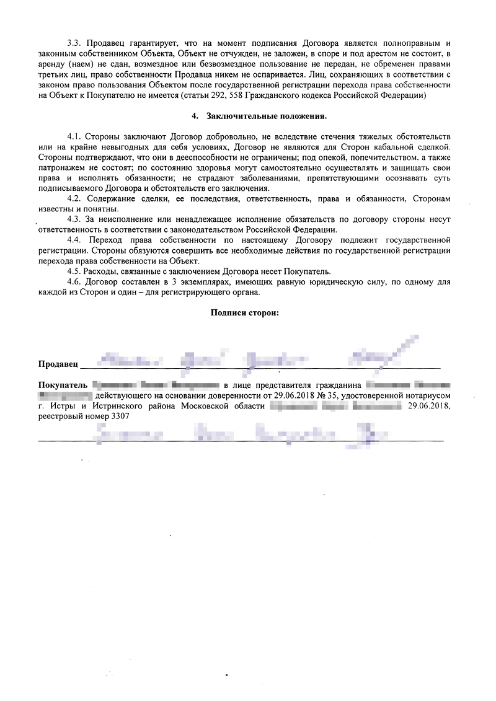

Как продать квартиру. Этапы и документы.
Продавец в сделке купли-продажи рискует меньше покупателя, но тратит больше времени и нервов. Продавцу нужно собрать кучу документов на квартиру. Если не сделать это вовремя или не взять нужную справку, сделку не зарегистрируют. Или покупатель откажется покупать квартиру, если его поджимает время и он не готов ждать, пока продавец разберется с бюрократией.
Главный риск продавца — вовремя не получить деньги за квартиру или получить поддельные. Поэтому составить договор и провести сделку и взаиморасчеты нужно удобным и надежным способом.
Если отнестись к продаже квартиры ответственно и вникнуть в тему, выйти на сделку можно с минимальными затратами времени, денег и нервов. Расскажу как.
ДО ДОГОВОРА КУПЛИ-ПРОДАЖИ
Собрать документы
Перечень документов, которые понадобятся для купли-продажи квартиры и регистрации перехода права собственности, может различаться. Точный список зависит от того, кто является собственником квартиры и на какие средства ее приобретает покупатель.
Есть документы, которые Росреестр запросит в любом случае, — без них ведомство не зарегистрирует переход права к новому собственнику:
- Паспорт собственника квартиры.
- Договор купли-продажи.
По закону для сделки этих документов достаточно, если вы единственный совершеннолетний собственник квартиры и не состоите в браке, а покупатель готов оплатить полную стоимость квартиры личными средствами.
Если квартира в общей собственности, процесс регистрации сделки усложнится.
По закону общая собственность может быть совместной или долевой. В общей долевой собственности доли каждого участника определены конкретно, например ½, ¼. В общей совместной собственности доли не определены и признаются равными. Например, когда квартира приватизировалась на всех членов семьи без определения долей.
Базовый список документов для купли-продажи квартиры, которая находится в общей собственности, останется таким же. К договору купли-продажи надо будет еще приложить согласие на сделку от другого собственника. В случае с долевой собственностью на сделке должны присутствовать все продавцы-дольщики или их представители по доверенности.
Договор купли-продажи квартиры в долевой собственности необходимо заключать через нотариуса. Для совместной собственности такого требования нет — достаточно простой письменной формы.
Если жилье купили в браке.
Совместно нажитое в браке имущество — это общая совместная собственность супругов. Независимо от того, кто его купил и на чье имя оно оформлено.
Если между супругами не заключен брачный контракт, необходимо получить нотариально заверенное согласие второго супруга на продажу квартиры. Если брачный контракт подписан и в нем установлен режим раздельной собственности на квартиру, получать согласие не нужно.
Согласие супруга или брачный контракт понадобится для регистрации сделки.
Если квартира или доля в собственности несовершеннолетнего.
Необходимо получить согласие органов опеки и попечительства на продажу жилья. Чтобы продать квартиру, где собственником является несовершеннолетний, надо предоставить ему другое собственное жилье не меньшей площади и не хуже по качеству. За этим следят органы опеки.
Если несовершеннолетнему не исполнилось 14 лет, дополнительно к базовому списку необходимо приложить:
- Свидетельство о рождении несовершеннолетнего собственника.
- Паспорт законного представителя и документ, подтверждающий его полномочия: например, свидетельство о рождении ребенка, удостоверение опекуна или свидетельство об усыновлении ребенка.
- Разрешение органа опеки и попечительства на распоряжение имуществом лиц, не достигших 14 лет.
Если несовершеннолетнему собственнику от 14 до 18 лет, он самостоятельно участвует в сделке. Для этого нужно дополнительно письменное согласие законных представителей на совершение этой сделки и разрешение органа опеки на дачу законными представителями согласия на распоряжение имуществом несовершеннолетним.
Что такое эмансипация несовершеннолетних
Несовершеннолетний, которому уже исполнилось 16 лет, может быть признан органами опеки и попечительства или судом полностью дееспособным — эмансипированным. Например, когда несовершеннолетний работает по трудовому договору, ведет предпринимательскую деятельность или вступил в брак.
Эмансипированные несовершеннолетние собственники вправе заключать сделки самостоятельно, без согласия законных представителей и органов опеки и попечительства на продажу жилья. В этом случае для сделки купли-продажи понадобится решение органа опеки и попечительства или суда о признании несовершеннолетнего полностью дееспособным или свидетельство о заключении брака.
Если покупатель оплачивает квартиру с использованием кредитных средств, в МФЦ или Росреестр никаких дополнительных документов подавать не нужно. Но они понадобятся банку покупателя для одобрения ипотечного кредита.
У каждого банка свои требования, поэтому точный список документов вам даст покупатель. Вот примерный перечень документов:
- Предварительный договор купли-продажи. Он нужен банку в качестве гарантии заключения сделки.
- Расписка в получении аванса или задатка.
- Технический паспорт БТИ на жилое помещение (не старше 5 лет). Он нужен, чтобы банк удостоверился в том, что нет незаконных перепланировок.
- Справка об отсутствии задолженности по платежам за коммунальные услуги.
- Выписка из домовой книги о том, что в жилом помещении не осталось зарегистрированных жильцов.
Если в ваших интересах действует представитель.
Если у продавца нет времени или возможности самому заключать и регистрировать сделку, можно доверить эту работу представителю. Для этого потребуется нотариальная доверенность. Ее нужно будет приложить к списку документов для сделки.
Если продавец сам продает жилье и заключает договор, а представителю доверяет регистрацию, в доверенности должно быть указано только право на подачу заявления на регистрацию перехода права собственности.
Если представитель полностью ведет сделку по продаже жилья, в доверенности нужно перечислить все полномочия и условия: заключить договор, продать за определенную цену, получить деньги, зарегистрировать. Все зависит от конкретной ситуации, но полномочия нужно описать максимально подробно, чтобы в последний момент не оказалось так, что представитель не может взять документы в МФЦ или получить аванс от покупателя.
На практике покупатели редко соглашаются совершить сделку через представителя. Поэтому на самой сделке, скорее всего, собственнику быть придется.
Как на практике
По закону для продажи квартиры никакие другие дополнительные документы не требуются.
Но на практике, чтобы удостоверится, что продавец не мошенник и сделка законна, покупатели часто просят показать им:
- договор купли-продажи или другие правоустанавливающие документы, из которых понятно, кто и на каких основаниях владеет квартирой, — договоры дарения, мены, долевого участия, свидетельство о праве на наследство, свидетельство о приватизации;
- справку о погашении ипотеки, если продавец приобретал квартиру в ипотеку;
- справки из психоневрологического и наркологического диспансеров, чтобы убедиться в том, что продавец полностью дееспособен и осознает последствия сделки;
- свидетельство о регистрации права собственности, если сохранилось (сейчас его уже не выдают);
- экспликацию, поэтажный план, технический и кадастровый паспорта БТИ, в которых указаны все характеристики квартиры;
- справку об отсутствии задолженностей по коммунальным платежам;
- справку об отсутствии долга за капремонт;
- выписку из домовой книги, из которой понятно, кто зарегистрирован в квартире;
- копию финансово-лицевого счета, который содержит сведения о зарегистрированных в квартире людях, характеристики квартиры, информацию о системах коммуникаций и коммунальных услугах.
Если вы продаете квартиру в Москве или Московской области, покупателю можно предоставить Единый жилищный документ. Он включает в себя основные характеристики квартиры, сведения о собственниках и зарегистрированных лицах, информацию о долгах за коммунальные услуги. ЕЖД заменяет справки об отсутствии задолженностей по коммунальным платежам и капремонту, выписку из домовой книги и копию финансово-лицевого счета.
Выписаться и разобраться с коммуналкой
Перед продажей квартиры необходимо рассчитаться за коммунальные услуги и капремонт и снять с регистрационного учета всех жильцов, прописанных на жилплощади.
Долги за капремонт и коммунальные услуги.
По закону долги по коммунальным услугам не переходят новому собственнику. Обязанность платить за квартиру и коммунальные услуги возникает после получения права собственности. Однако покупатель наверняка попросит вас подтвердить отсутствие долгов, чтобы не объяснять коммунальщикам, что он новый собственник и никому ничего не должен. Справку об отсутствии задолженности можно взять в управляющей компании, ТСЖ, ЖСК или другой организации, которая обслуживает ваш дом. Подтвердить отсутствие долга по коммунальным услугам также может ЕЖД, который можно получить через МФЦ.
В отличие от коммунальных услуг, долги по капремонту привязываются не к человеку, а к квартире — и переходят к новому собственнику. Справку об отсутствии долга по капремонту выдает региональный фонд капитального ремонта.
Если долг по коммуналке и капремонту есть, квартиру все равно можно продать. Но нужно обговорить порядок погашения долга с покупателем и закрепить его документально: в предварительном договоре купли-продажи или в авансовом соглашении. Долг можно погасить задатком или авансом, который внесет покупатель, или оплатить из полученных средств после продажи. Также можно соразмерно снизить стоимость квартиры, чтобы долг оплатил покупатель.
Снятие с регистрационного учета жильцов.
После погашения долгов за квартиру нужно выписать — снять с регистрационного учета по месту жительства — себя и всех зарегистрированных в квартире жильцов. Выписаться можно на любом этапе сделки и даже после нее. Можно вообще не выписываться из квартиры, это не препятствует продаже и переходу права собственности. Но покупатель перед сделкой захочет удостовериться в том, что на жилплощади никто не зарегистрирован и никто не придет жить в его новую квартиру. Чтобы развеять опасения, необходимо предоставить покупателю выписку из домовой книги или ЕЖД. Эти документы можно взять через МФЦ.
Выписаться можно автоматически, прописавшись по новому месту жительства. В этом случае вам понадобится паспорт и выписка из ЕГРН, подтверждающая, что вы собственник жилого помещения, в которое прописываетесь. Если собственник не вы, потребуется заявление собственника о постановке вас на регистрационный учет.
Из квартиры можно выписаться в никуда, но только совершеннолетним жильцам. Ребенка могут снять с регистрационного учета, только если у него уже есть регистрация по новому месту жительства.
Помните, что если не прописываться по месту пребывания или жительства более 90 дней, можно заработать штраф в размере от 2 до 3 тысяч рублей, а для жителей Москвы и Санкт-Петербурга — от 3 до 5 тысяч рублей.
Подать заявление о снятии с учета или постановке на учет можно в отдел Главного управления по вопросам миграции МВД РФ по месту, откуда выписываетесь или где хотите зарегистрироваться. Также можно сделать это через госуслуги или МФЦ.
Вместе с заявлением в паспортный стол нужно отдать паспорт, куда поставят штамп о снятии с учета и постановке на учет. Госпошлина за выписку и прописку не взимается.

Сотрудник паспортного стола рассмотрит заявление и поставит вам штамп в паспорте о снятии с регистрационного учета

После снятия с учета в паспортном столе вам выдадут такой листок убытия. Его можно предоставить покупателю как подтверждение того, что вы выписались из квартиры
Составить предварительный ДКП или авансовое соглашение
Эти документы нужны, чтобы закрепить намерение сторон заключить договор купли-продажи квартиры.
Предварительный договор купли-продажи
Обязывает стороны в будущем заключить основной договор.
Предварительный ДКП защищает и продавца и покупателя. Если по какой-то причине одна из сторон будет уклоняться от заключения основного договора, другая сторона может через суд обязать заключить договор на условиях предварительного договора.
Предварительный договор составляют в простой письменной форме. Нотариально удостоверять его не нужно.
В предварительном договоре обязательно указать:
- Полные данные продавца и покупателя — ФИО, адреса проживания, паспортные данные, СНИЛС, данные представителей и доверенностей.
- Описание и основные характеристики жилого помещения — адрес, кадастровый номер, этаж, общая и жилая площадь, количество комнат, состояние квартиры.
- Цену.
- Порядок расчетов — наличные, кредит, рассрочка, график платежей.
- Соглашение о задатке или авансе.
- Срок, в который должен быть заключен основной договор.
- Ответственность сторон, если не будет заключен основной договор, — возмещение убытков, неустойка.
В некоторых случаях заключать предварительный договор обязательно. Например, если покупатель приобретает квартиру с помощью ипотечного кредита, банк обязательно потребует предварительный договор, чтобы начать оформление кредита.


Вариант предварительного договора
Задаток или аванс.
Чтобы подтвердить намерение купить квартиру и в качестве гарантии, что продавец не продаст квартиру другому человеку, покупатель обычно заранее вносит задаток или аванс.
И задаток и аванс вносятся в счет стоимости квартиры до подписания основного договора. Если сделка идет по плану и стороны добросовестно исполняют свои обязательства, разницы между задатком и авансом нет — покупатель просто вносит оставшуюся часть суммы за квартиру после ее передачи.
Различия проявляются, если что-то пошло не так. Если сделка сорвалась по вине покупателя, задаток остается у продавца, если по вине продавца — он возвращает покупателю задаток в двойном размере. Аванс же возвращается покупателю в любом случае. Задаток сильнее мотивирует стороны договора добросовестно исполнить свои обязательства.
Условие о внесении задатка или аванса и его сумме включается в предварительный договор купли-продажи, а его получение продавец должен подтвердить распиской.
Авансовое соглашение.
Вместо предварительного договора купли-продажи стороны могут составить авансовое соглашение — соглашение о намерениях совершить сделку и о передаче аванса. Если сделка не состоится, аванс вернется покупателю и ни одна из сторон не будет вправе принудить другую через суд заключить сделку. То есть по авансовому соглашению не получится обязать покупателя купить квартиру, а продавца — продать ее.
Договор купли-продажи
Лучше, если основной договор купли-продажи составит для вас опытный юрист, чтобы предусмотреть все риски. Но можно составить договор самостоятельно с помощью шаблонов из интернета и подборки Т—Ж о том, как продать квартиру.
Есть существенные условия договора, без которых он будет считаться незаключенным. Обязательно надо прописывать предмет договора, цену квартиры и перечень лиц, которые вправе пользоваться жилым помещением.
Разумеется, на практике этих трех существенных условий недостаточно. Необходимо предусмотреть и максимально подробно описать в договоре вообще все условия сделки. Вот их перечень:
- Дата и место подписания договора купли-продажи.
- Полные данные продавца и покупателя — ФИО, паспортные данные, адреса проживания, ИНН или данные представителей и их доверенностей.
- Предмет договора — описание и основные характеристики квартиры: адрес, этаж, общая и жилая площадь, количество комнат, кадастровый номер, состояние квартиры.
- Данные о правоустанавливающих документах на жилое помещение, на основании которых продавец приобрел право собственности: например, номер и дата договора купли-продажи.
- Данные о государственной регистрации права на квартиру — номер и дата свидетельства о праве собственности, информация из выписки из ЕГРН.
- Гарантии продавца в том, что квартира никому не продана, не подарена и не заложена, что продавец дееспособен, не признан банкротом, что в отношении него не возбуждалось и не ведется дело о банкротстве и др.
- Информация о том, что имеются необходимые согласия — супруга, законного представителя, органов опеки и попечительства.
- Цена. Это существенное условие договора. Цена должна быть выражена точной суммой денег. Обязанность продавца передать объект недвижимости, а покупателя принять такой объект и внести за него плату.
- Порядок расчетов — наличными или переводом, при помощи кредитных средств, с рассрочкой или без.
- Ответственность сторон за нарушение договорных обязательств — возмещение убытков, неустойка.
- Обязанность сторон подать заявление на госрегистрацию перехода права.
- Подписи сторон.
- Это лишь необходимый минимум условий договора. К каждому конкретному случаю нужно подойти индивидуально и максимально подробно описать все условия сделки.
На момент подписания договора купли-продажи у сторон на руках должно быть по экземпляру предварительного договора купли-продажи или авансового соглашения, у продавца также — все оригиналы необходимых документов к сделке, а у покупателя — расписка продавца в получении аванса или задатка.


Пример договора купли-продажи квартиры
Нотариальное удостоверение договора.
Договор купли-продажи квартиры по общему правилу заключается в простой письменной форме, и удостоверять его у нотариуса не обязательно — зависит от желания сторон.
В некоторых случаях договор купли-продажи должен быть нотариально удостоверен. Например, если вы продаете квартиру, которая находится в долевой собственности или которой владеет несовершеннолетний.
Нотариальное удостоверение — это гарантия юридической чистоты сделки. Нотариус составит договор, проверит дееспособность сторон и наличие всех документов, отсутствие арестов и ограничений и направит заявление на регистрацию в Росреестр в электронном виде. Плюсом является и то, что нотариус за свои действия несет юридическую ответственность, в том числе материальную.
Но оформление сделки у нотариуса обойдется недешево.
Сколько стоит удостоверить сделку по отчуждению квартиры в 2019 году
| Кому отчуждаем | Сумма сделки | Стоимость | Комментарий |
|---|---|---|---|
| Родственникам | До 10 млн Р | 3000 Р + 0,2% суммы сделки | Или оценки стоимости недвижимости |
| Выше 10 млн Р | 23 000 Р + 0,1% суммы сделки | Но не более 50 000 Р | |
| Другим лицам | До 1 млн Р | 3000 Р + 0,4% суммы сделки | |
| 1—10 млн Р | 7000 Р + 0,2% суммы сделки | ||
| Выше 10 млн Р | 25 000 Р + 0,1% суммы сделки | Но не более 100 000 Р |
Кроме тарифа придется оплатить юридические и технические услуги нотариуса, расценки на которые он устанавливает сам. Например, составление договора купли-продажи может стоить от 2 до 10 тысяч рублей. Расходы распределяются между сторонами по договоренности.
ПОСЛЕ ДОГОВОРА КУПЛИ-ПРОДАЖИ
Регистрация перехода права собственности
Когда вы подпишете договор, необходимо будет зарегистрировать переход права собственности к покупателю в Росреестре. Для этого помимо необходимых для регистрации документов, которые мы рассмотрели выше, продавцу и покупателю необходимо также подать:
- Заявление о госрегистрации.
- Квитанцию об оплате госпошлины — 2000 Р. Ее обычно оплачивает покупатель. 2000 Р
Документы можно подать непосредственно в Росреестр, тогда срок регистрации составит до 7 рабочих дней. Еще можно подать в МФЦ, тогда срок регистрации увеличится до 9 рабочих дней.
Также документы можно подать удаленно на сайте Росреестра. Но тут есть сложность: все документы продавец и покупатель должны подписать квалифицированной электронной подписью, которая есть далеко не у всех. Для этого необходимо купить квалифицированный сертификат электронной подписи, который стоит 900 рублей в год. Срок изготовления — 3 дня.
Если вы нотариально удостоверяете сделку, нотариус может сам направить заявление на регистрацию в Росреестр в электронном виде. При оформлении договора в некоторых банках также есть возможность подать документы на регистрацию электронно — уточняйте это в службе поддержки вашего банка.
Когда все документы будут подписаны и сданы, сотрудники Росреестра или МФЦ выдадут расписку в получении документов. В ней будет указана дата окончания регистрации. С этой распиской надо прийти в Росреестр или в МФЦ в назначенный срок и получить выписку из ЕГРН. В ней будет указан новый собственник.
Расчеты
Один из главных вопросов, волнующих и продавца, и покупателя, — безопасность расчетов по сделке. Есть несколько вариантов взаиморасчетов: наличными средствами, через банковскую ячейку, аккредитив или депозит нотариуса. Стороны должны выбрать удобный для них способ.
Наличными из рук в руки
Самый дешевый и небезопасный способ. Продавца могут ждать неприятные сюрпризы в виде фальшивых денег или их недостаточного количества. Если продавец сам принимает наличные деньги за квартиру, лучше делать это в присутствии свидетелей, чтобы они в случае чего поддержали продавца в правоохранительных органах и в суде. Также нужно обязательно пересчитать деньги, проверить их на подлинность при помощи специального прибора — детектора банкнот — и составить расписку в их получении.
Все эти манипуляции затруднительны. Поэтому, если покупатель принес наличные деньги, лучше сразу пойти вместе с ним в банк и внести деньги через кассу на счет. Кассир банка пересчитает и проверит деньги, а затем зачислит их на счет продавца.
Аренда депозитарной банковской ячейки.
Стороны могут поместить деньги покупателя в банковскую ячейку в присутствии сотрудника банка. Арендовать такую ячейку можно на срок от одного дня, стоимость аренды — от 75 до 200 рублей в день в зависимости от объема ячейки и тарифов банка.
При этом составляется соглашение, в котором оговаривается порядок и условия выдачи денег продавцу после регистрации сделки. Например, продавец допускается к сейфу после предъявления им оригинала договора купли-продажи и выписки из ЕГРН. Если сделка не состоится, покупатель сможет забрать свои деньги.
Аккредитив
Cпособ расчетов, при котором покупатель открывает в банке счет на свое имя и на него вносит деньги за квартиру. После завершения регистрации сделки банк проверяет документы и переводит эти деньги на счет продавца. Если регистрация не состоялась, деньги возвращаются покупателю. Аккредитив стоит около 2 тысяч рублей.
Депозит нотариуса.
Покупатель может внести деньги на специальный банковский счет — депозит нотариуса. Нотариус перечислит деньги продавцу, когда будет зарегистрирован переход права.
Этот способ удобен тем, кто оформляет сделку нотариально. Стоимость услуги — 1,5 тысячи рублей. Но нужно еще учесть стоимость технической работы нотариуса по составлению документов, которую он устанавливает самостоятельно, и банковские комиссии за перевод средств между счетами — их размер зависит от банка.
Обременение в пользу продавца.
Если покупатель рассчитывается за квартиру с отсрочкой или рассрочкой платежа, хороший способ обезопасить себя — указать в договоре купли-продажи, что на недвижимость накладывается обременение в пользу продавца до полной выплаты ему стоимости квартиры. Об этом внесут запись в ЕГРН, и покупатель не сможет распоряжаться недвижимостью до полного расчета, хотя она и будет зарегистрирована на его имя.
Чтобы снять обременение, обе стороны должны обратиться в Росреестр с соответствующим заявлением.
Памятка продавцу квартиры
Еще раз все то же самое, но кратко.
Последовательность действий:
- Собрать документы.
- Оплатить коммунальные услуги, выписать из квартиры всех зарегистрированных жильцов.
- Составить и подписать предварительный договор или авансовое соглашение.
- Получить задаток или аванс и составить расписку о его получении.
- Составить и подписать договор купли-продажи.
- Зарегистрировать сделку в Росреестре.
- Получить деньги и передать квартиру.
Пакет документов если вы единственный совершеннолетний собственник квартиры, не состоите в браке или приобрели жилье до вступления в брак:
- Паспорт гражданина РФ.
- Договор купли-продажи квартиры.
- Заявление в Росреестр.
- Квитанция об оплате госпошлины.
Если действуете через представителя, нужна еще нотариальная доверенность на него.
Если помещение в общей долевой собственности, понадобится нотариально удостоверенный договор купли-продажи квартиры.
Если квартира приобретена в браке, подготовьте нотариально заверенное согласие супруга на продажу квартиры или брачный договор.
Если квартира или доля в ней — собственность несовершеннолетнего до 14 лет, нужны еще три документа:
- Свидетельство о рождении.
- Документ, подтверждающий полномочия законного представителя несовершеннолетнего, и его паспорт.
- Разрешение органа опеки и попечительства на распоряжение имуществом лиц, не достигших 14 лет.
Если несовершеннолетнему от 14 до 18 лет, документы другие:
- Разрешение органа опеки и попечительства на дачу законными представителями согласия на распоряжение имуществом несовершеннолетним в возрасте от 14 до 18 лет.
- Письменное согласие законных представителей на совершение сделки несовершеннолетним в возрасте от 14 до 18 лет.
Если используется ипотека, дополнительные документы такие:
- Предварительный договор купли-продажи.
- Расписка в получении аванса или задатка.
- Технический паспорт на жилое помещение (не старше 5 лет).
- Справка об отсутствии задолженности по платежам за коммунальные услуги и капремонт.
- Выписка из домовой книги о том, что в жилом помещении не осталось зарегистрированных жильцов.